Drawing only, no code. Branch c5-r15-kor1 · 2026-10-09, updated 10-10 with Csilla's answers. Full drawing with all states: R15-lapok-4.dc.html.
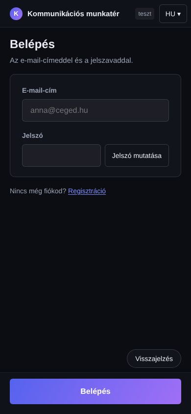
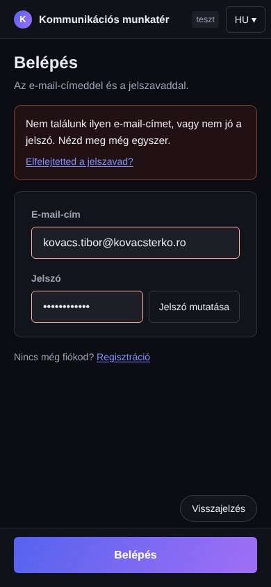
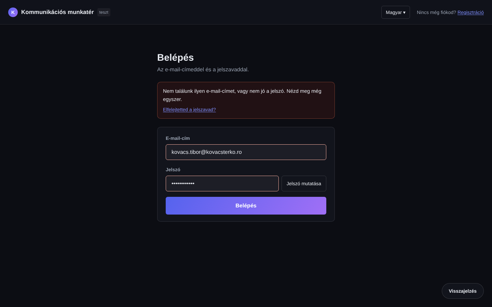
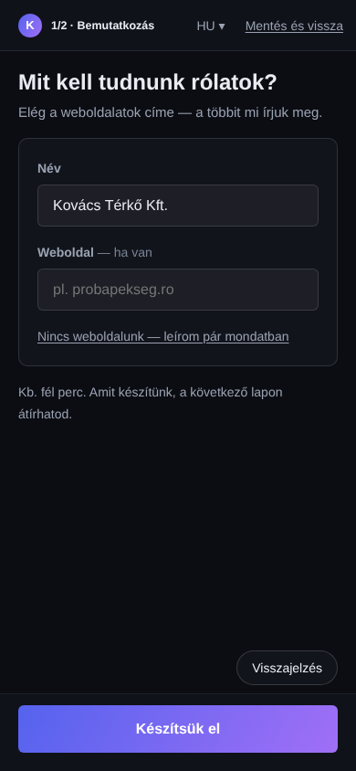
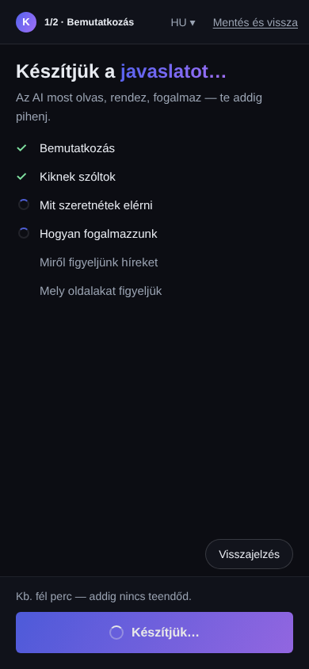
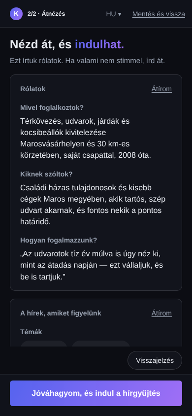
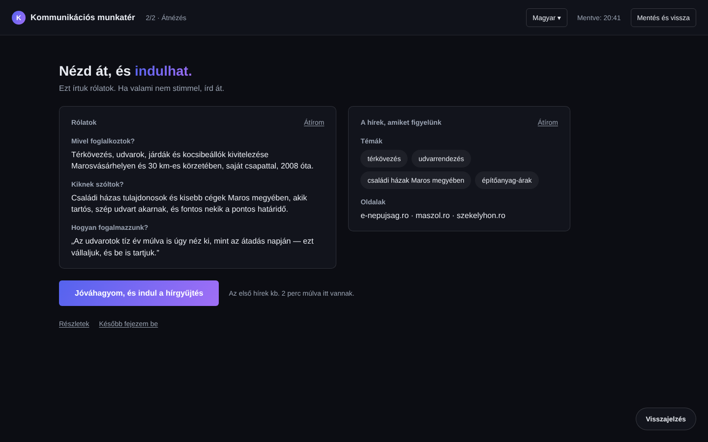
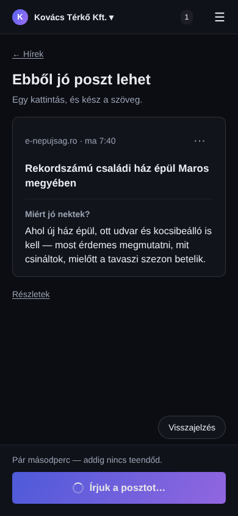
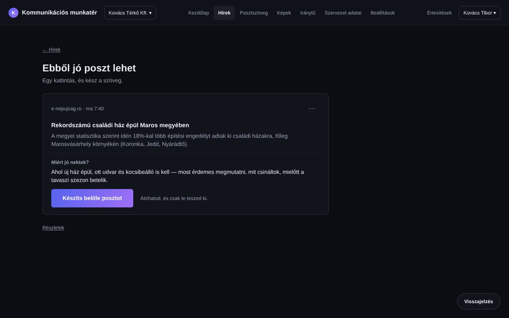
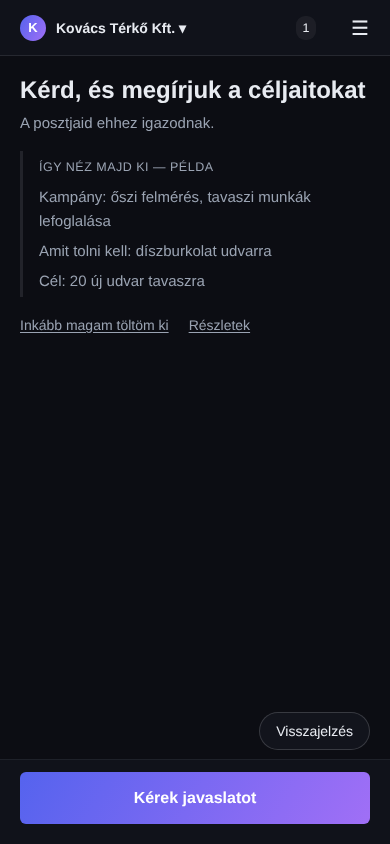
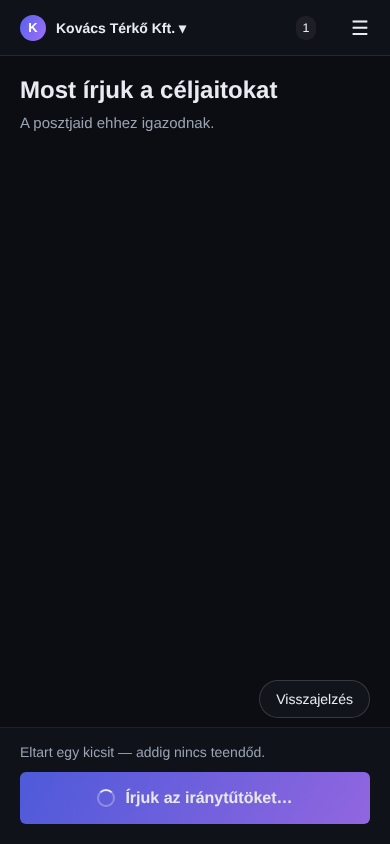
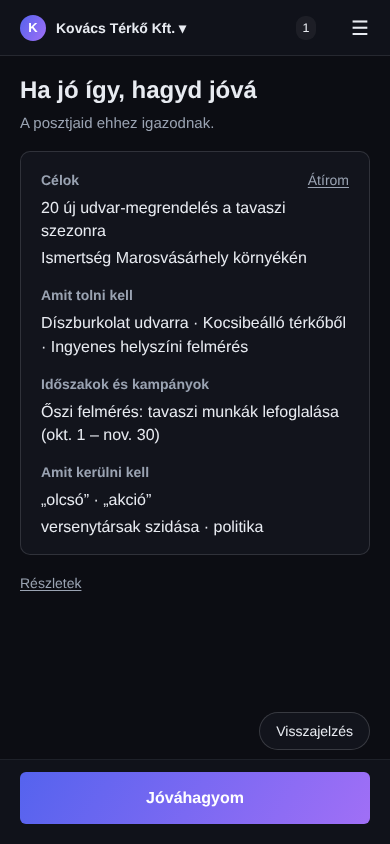
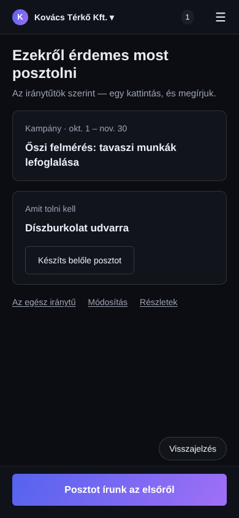
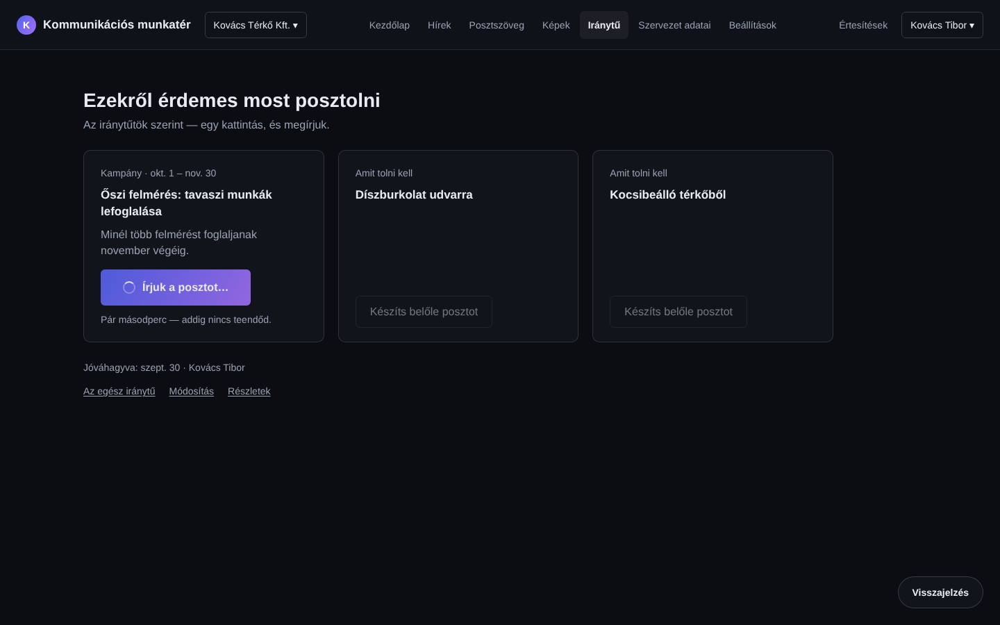
| Page | Element | Now |
|---|---|---|
| 02b | "AI-javaslat / Te adtad meg / Weboldal alapján", "az AI ebből írta" | off screen |
| 05 | "v{n} beállítással", "AI-összefoglaló" badge | off screen |
| 11 | "javaslat / te adtad" row marks | off screen |
| all | everything else from today's pages | moved behind Átírom / Részletek / "···" — full list in kerdesek-4.md |